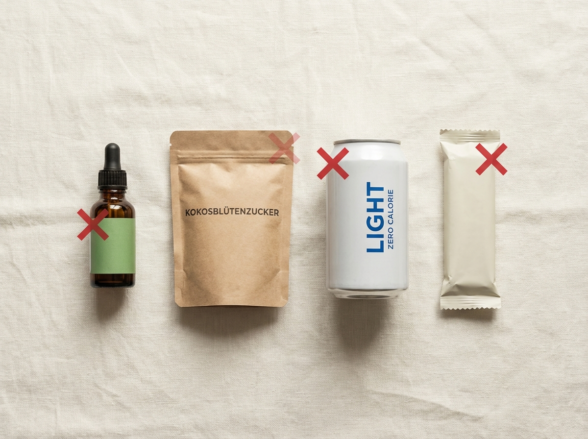
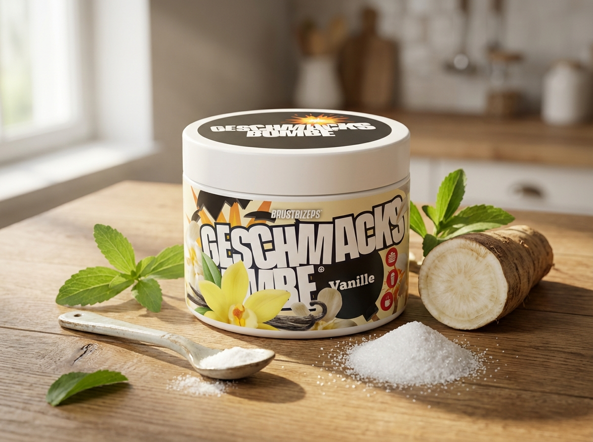
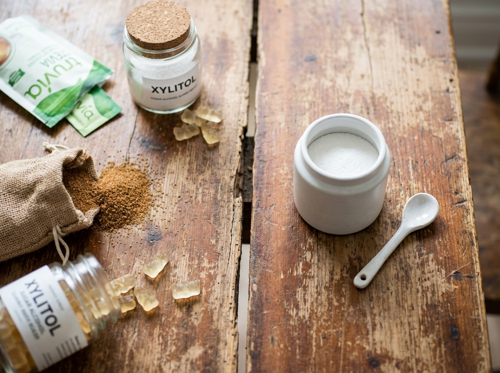

Drei Tage Verzicht. Dann Schokolade.
Immer wieder. Jede Diät. Dasselbe Ende.
Mit 40, 50, 60 kennt man dieses Spiel auswendig. Man hat Zeitschriften und Bücher gelesen, Apps ausprobiert, den Zucker weggelassen.
Und trotzdem – irgendwann, meistens abends, im schwachen Moment – landet man wieder da, wo man angefangen hat...
Ich war diese Frau. Über Jahre. Drei Diäten, zweimal abgenommen, dreimal zugenommen. Jedes Mal dieselbe Geschichte: Ich scheiterte an diesen verdammten Heißhungerattacken.
Ich dachte, das wäre eine Frage der Disziplin. Dass andere Frauen das irgendwie hinkriegen – und ich eben nicht.
Dabei steckte dahinter etwas, das niemand mir erklärt hatte: Jede Zuckeralternative, die ich je probiert hatte, hat die Kalorien weggenommen – aber das Signal, das mein Gehirn gebraucht hat, nie ersetzt. Also kam der Heißhunger. Immer wieder. Verlässlich wie ein schlechter Freund.
Wenn du schon mehrfach versucht hast, Zucker zu reduzieren oder ganz darauf zu verzichten – und immer wieder im schwachen Moment gescheitert bist – dann steckt dahinter wahrscheinlich genau dasselbe.
Was ich dann entdeckt habe, hätte ich mit 30 wissen müssen.
Das Süß-Paradoxon: Warum Verzicht biologisch zum Scheitern verurteilt ist
Lass mich dir etwas erklären, das die Diätindustrie nicht gerne hört.
Dein Gehirn besitzt spezialisierte Süßrezeptoren – nicht nur auf der Zunge, sondern im gesamten Verdauungstrakt.
Diese Rezeptoren sind evolutionär darauf ausgelegt, ein klares Signal zu senden, wenn sie ausreichend stimuliert werden: Ich bin zufrieden. Ich habe bekommen, was ich brauche.
Das Problem: Wenn du aufhörst, Zucker zu essen, ohne diese Rezeptoren anderweitig zu befriedigen, sendet dein Gehirn das gegenteilige Signal, weil es biologisch so programmiert ist.
Es löst Heißhunger aus. Es erhöht die Cortisol-Ausschüttung. Es macht dich unruhig, unkonzentriert und – irgendwann – unausweichlich – schwach.
Und genau hier liegt das fundamentale Problem mit dem Rat „Iss einfach weniger Süßes":
Er ignoriert vollständig, was in deinem Körper passiert, wenn du das versuchst. Du kämpfst nicht gegen eine schlechte Angewohnheit. Du kämpfst gegen dein eigenes Gehirn.

Das größere Problem: Warum alle bekannten Alternativen dieses Problem nicht lösen
Aber es kommt noch schlimmer. Denn natürlich bist du nicht die Erste, die das erkannt hat. Der Markt ist voll mit Lösungen.
Stevia. Aspartam. Kokosblütenzucker. Light-Produkte. Zero-Getränke. Proteinriegel.
Diät-Müsli. Light-Joghurt. Agavendicksaft. Honig. Ahornsirup. Mönchsfrucht.
Hafermilch-Produkte „ungesüßt. Erythrit. Xylit. Zuckerrübensirup.
Ich könnte Stunden so weiter machen...
Das Problem: Keine davon löst das eigentliche Problem wirklich.
Stevia stimuliert deine Süßrezeptoren – aber hinterlässt einen bitteren, lakritzartigen Nachgeschmack, der dein Gehirn nicht wirklich befriedigt. Es ist wie ein Versprechen, das nicht eingehalten wird. Dein Körper spürt die Diskrepanz.
Natürliche Zuckeralternativen klingen gesund, sind aber kalorientechnisch kaum besser als normaler Haushaltszucker. Du zahlst mehr, fühlst dich gesünder – und sabotierst trotzdem deine Kalorienbilanz.
Zuckeralkohole funktionieren auf dem Papier, aber jeder, der schon einmal eine ganze Packung zuckerfreier Gummibärchen gegessen hat, kennt die Konsequenzen – und die sind nicht angenehm.
Light-Produkte aus dem Supermarkt? nehmen dir jede Kontrolle. Wer selbst kocht, ist damit schlecht bedient.
Und irgendwann – manchmal nach Wochen, manchmal nach Tagen – gewinnt der Schokoriegel.

Die Lösung, die ich zufällig entdeckte – und erst nicht ernst nahm
Ich muss ehrlich sein: Als mir eine Freundin zum ersten Mal davon erzählte, hörte ich höflich zu – und dachte innerlich: Wieder so ein Produkt.
Ich hatte in den letzten Jahren wirklich alles der oben genannten Alternativen probiert. Ich war nicht naiv. Ich wusste, wie Marketing funktioniert. Und ich wusste, wie sich ein bitterer Stevia-Nachgeschmack im Morgenkaffee anfühlt.
Aber dann erklärte sie mir nicht das Produkt. Sie erklärte mir das Prinzip. Und das war das erste Mal, dass mir jemand eine Antwort gab, die wirklich Sinn ergab.
Nicht „dieser Süßstoff hat weniger Kalorien als Zucker."
Sondern: Warum dein Gehirn beim Zuckerverzicht überhaupt in den Entzug geht – und was nötig ist, um das zu verhindern.
Was in deinem Gehirn wirklich passiert
Dein Gehirn bewertet Süße nicht nach Kalorien – sondern nach Rezeptor-Stimulation.
Wenn du Zucker isst, sendet dein Körper ein klares Signal: Bedürfnis erfüllt. Hörst du auf, ohne diese Rezeptoren anderweitig zu befriedigen, bleibt das Signal aus. Die Folge: Heißhunger. Gegen den hat Willenskraft keine Chance.
Deshalb scheitert Stevia so oft. Es stimuliert die Rezeptoren – aber unvollständig. Der bittere Nachgeschmack ist kein Zufall. Er ist das Zeichen, dass das Signal nie ankam.
Du kämpfst nicht gegen eine Angewohnheit. Du kämpfst gegen deine eigene Biologie.
Was die Wissenschaft dazu sagt
Als ich das hörte, wollte ich es verstehen. Also habe ich die Forschung gelesen.
Es gibt einen Wirkstoff, der die Süßrezeptoren vielfach stärker stimuliert als Zucker – bei null Kalorien. Kein Spike. Kein Crash. Kein Heißhunger.
Dazu ein Präbiotikum, das die Darmflora stärkt. Und eine gesunde Darmflora reguliert direkt den Appetit.
Die Kombination tut etwas, das kein anderes Produkt schafft: Sie gibt deinem Gehirn das Signal, das es braucht – und es hört auf zu fordern.
Bei 4,5 Kalorien pro Portion.
Auf der Suche nach einem Produkt, das genau das umsetzt, bin ich auf die Geschmacksbombe gestoßen.
Was die Geschmacksbombe anders macht
Erster Gedanke, als ich sie in den Händen hielt: Wieder ein Pulver mit einem cleveren Namen.
Dann sah ich, was drin steckt.
Der erste Wirkstoff ist Sucralose. Er stimuliert die Süßrezeptoren vielfach stärker als normaler Zucker – bei null Kalorien und ohne Einfluss auf den Blutzucker. Kein Nachgeschmack. 3 Gramm ersetzen 50 Gramm Zucker.
Der zweite ist Inulin – ein Präbiotikum, das die Darmflora stärkt und das Sättigungsgefühl reguliert.
Zwei Wirkstoffe, die zusammen das tun, was kein anderes Produkt schafft: dem Gehirn das Signal geben, das es braucht – damit der innere Kampf aufhört.

Der entscheidende Unterschied zu anderen Zuckeralternativen
Sie stimulieren die Rezeptoren unvollständig, hinterlassen Nachgeschmack oder Verdauungsprobleme, und adressieren nicht, was im Körper wirklich passiert. Sie erzeugen keinen echten Abschluss. Nur einen Kompromiss, der sich täglich wiederholt.
Wenn sie funktionieren, dann einfach weil sie nichts anderes sind als... Zucker! Kalorien spart man damit sowieso nicht.
Die Geschmacksbombe macht etwas anderes: Sie befriedigt die Süßrezeptoren vollständig. Sie unterstützt das natürliche Sättigungssignal über den Darm. Und sie tut das, ohne den Blutzucker zu belasten, ohne Nachgeschmack, ohne große Umstellung.
Stell dir vor, du müsstest nicht mehr stark sein. Sondern einfach aufhören, gegen deinen eigenen Körper zu arbeiten. Das ist der Unterschied.

Was ich nicht erwartet hatte – mein ehrlicher Selbsttest
Als ich die Geschmacksbombe das erste Mal in den Händen hielt, war mein erster Gedanke: Das ist eine sehr kleine Dose für ein sehr großes Versprechen.
Aber ich hatte die Wissenschaft verstanden. Ich hatte beschlossen, es ernsthaft mal ein paar Tage auszuprobieren. Und dann ehrlich Bilanz ziehen.
Was folgte, hat mich in mehrfacher Hinsicht überrascht – und nicht immer dort, wo ich es erwartet hatte.
Erste Menge ins Pulver, umrühren, erster Schluck.
Süß und tatsächlich wirklich lecker. Nicht dieses Stevia-Süß mit dem bitteren Unterton. Einfach: süß.
Ich habe auf den "Haken" gewartet. Er kam nicht. Was ich stattdessen bemerkte: danach keine Lust auf mehr Süßes. Das war neu.
Ich esse seit Jahren meinen mageren Joghurt mit Beeren. Ohne Honig schmeckt er aber nach einer unangenehmen Verpflichtung.
In Woche zwei habe ich ihn zum ersten Mal seit Jahren genossen. Pulver rein, ein paar Beeren, umrühren.
Meine Freundin probierte einen Löffel und fragte: „Hast du Zucker reingetan?"
Hatte ich nicht.
Der Test, bei dem ich am ehesten mit Scheitern gerechnet hatte...
Proteinpancakes, mein Standardrezept. Statt einem Esslöffel Zucker nur das Pulver mit Vanille Geschmack.
Ergebnis: gebräunt, weich, super lecker. Mein Mann – der kritisch testete – aß drei Stück und fragte mich tatsächlich nach mehr.
Ich hatte in diesem Monat nicht einmal nach Schokolade gegriffen. Dieser Impuls war einfach viel seltener.
Wenn die Rezeptoren befriedigt sind, hört das Gehirn auf zu fordern. Kein innerer Kampf mehr.
Meine Jeans passte wieder. Ich hatte nicht gehungert. Ich hatte aufgehört, gegen meine eigene Biologie zu arbeiten – und angefangen, mit ihr zu arbeiten.
Was andere sagen, die denselben Schritt gemacht haben
Ich wollte wissen: War das meine persönliche Erfahrung – oder erkennen andere Frauen dasselbe Muster? Die Antworten, die ich fand, klangen vertraut.
Ich habe beruflich mit Klientinnen gearbeitet, die seit Jahren scheiterten – immer am selben Punkt. Der Heißhunger gewann. Als ich selbst die Geschmacksbombe testete und verstand, warum sie funktioniert, habe ich begonnen, das Prinzip auch in meiner Beratung einzusetzen. Ich habe in fünf Wochen 10 Kilo verloren – ohne einmal das Gefühl zu haben, auf Süßes verzichtet zu haben. Das klingt unglaubwürdig, ich weiß. Aber genau das macht dieses Produkt anders.
Ich bin Diabetikerin. Jahrelang war Süßes für mich offiziell vom Tisch. Ich habe mich an Geburtstagen, bei Familienfeiern, beim gemeinsamen Kuchenbacken mit meinen Kindern immer ausgeschlossen gefühlt. Seit ich die Geschmacksbombe verwende, backe ich wieder mit. Mein Blutzucker bleibt stabil. Und meine Tochter hat keine Ahnung, dass ihr Lieblingskuchen seit Monaten ohne Zucker ist.
Ich tracke meine Makros seit zwei Jahren. Jeder Süßstoff, den ich vorher probiert habe, hat irgendwie immer wieder Heißhunger ausgelöst – ich weiß nicht warum, aber es war so. Mit der Geschmacksbombe ist das anders. Ich esse meinen Quark, meinen Shake, mein Frühstück – und ich bin danach wirklich fertig. Kein Greifen nach mehr. Das klingt simpel, aber für mich war das ein Gamechanger.
Die unbequeme Wahrheit über den Zuckerersatz-Markt
Lass mich ehrlich sein – und das ist etwas, das die meisten Hersteller nicht gerne lesen:
Der Markt für Zuckeralternativen ist groß. Sehr groß. Und ein Großteil davon lebt davon, dass du das Problem nie wirklich löst – sondern immer wieder neue Produkte kaufst, die dich nur halb zufriedenstellen.
Die Geschmacksbombe ist kein weiteres Produkt in dieser Kategorie. Sie ist ein anderer Ansatz: Befriedige den Mechanismus vollständig, mit der richtigen Wirkstoffkombination, beim richtigen Kalorienwert – und höre auf, gegen deinen eigenen Körper zu arbeiten.
Warum die Geschmacksbombe anders ist – ein ehrlicher Vergleich
So einfach funktioniert es im Alltag
Das war das Zweite, was mich überrascht hat – nach dem Geschmack. Ich hatte erwartet, meine Routine umstellen zu müssen. Neue Rezepte lernen. Mich an eine andere Art zu kochen gewöhnen. Das war nicht nötig.
Morgens: Eine kleine Menge in den Kaffee oder den Quark – fertig. Kein Abwiegen, kein Experimentieren, kein Aufwand.
Nach dem Training: Direkt in den Proteinshake. Löst sich vollständig auf, verändert die Konsistenz nicht, schmeckt wie ein Shake, den man wirklich trinken will – nicht wie ein Pflichtgetränk.
Beim Backen: Dieselbe Menge wie im Rezept angegeben – nur dass du statt 50 Gramm Zucker 3 Gramm nimmst. Das ist alles. Der Rest bleibt gleich.
Pro 200g-Packung sind über 66 Portionen enthalten. Wer einmal rechnet, merkt schnell: Eine Portion kostet weniger als ein einzelnes Stück Schokolade aus dem Supermarkt. Und sie bewirkt das Gegenteil davon.
Mein persönliches Fazit – warum ich nicht zurückgegangen bin
Drei Diäten. Jedes Mal dieselbe Niederlage. Immer am selben Punkt.
Rückblickend ist es fast erschreckend logisch: Ich habe nie das eigentliche Problem gelöst. Ich habe Zucker weggelassen – aber nie aufgehört, ihn zu wollen. Mein Gehirn hat gefordert. Ich habe gekämpft. Irgendwann hat es gewonnen.
Seit ich verstanden habe, wie der Mechanismus wirklich funktioniert – und seit ich ein Produkt gefunden habe, das ihn an der Wurzel adressiert – ist dieser Kampf vorbei. Nicht weil ich stärker geworden bin. Sondern weil ich aufgehört habe, gegen meine eigene Biologie zu kämpfen.
- ✅ Mein Quark schmeckt endlich wieder nach etwas
- ✅ Mein Kaffee ist süß – ohne Nachgeschmack, ohne schlechtes Gewissen
- ✅ Ich backe wieder – und das Ergebnis schmeckt wie immer
- ✅ Ich greife nicht mehr abends zur Schokolade – weil der Impuls schlicht ausbleibt
- ✅ Meine Jeans passt wieder – ohne dass ich einen einzigen Tag gehungert habe
- ✅ Hergestellt in Deutschland, laborgeprüft, 100% vegan und glutenfrei
Die Geschmacksbombe hat für mich nicht einfach Zucker ersetzt. Sie hat das Problem gelöst, das hinter jedem gescheiterten Versuch steckte.
Jetzt Geschmacksbombe testen – 35% Rabatt im 4er-Set